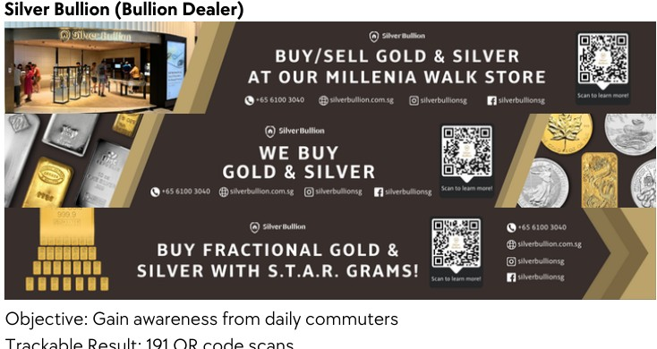
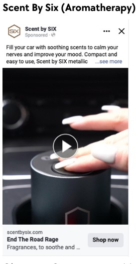
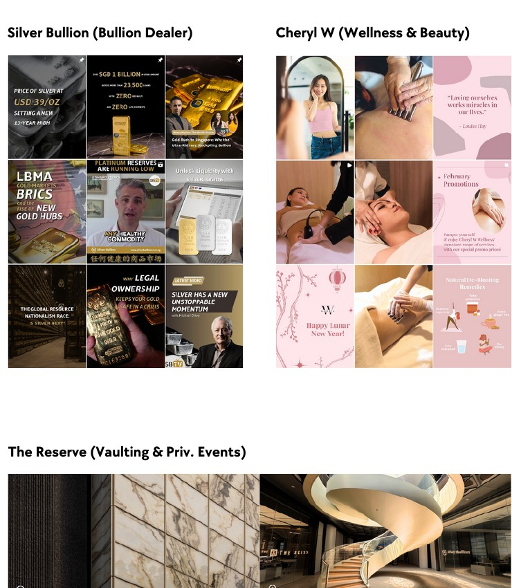
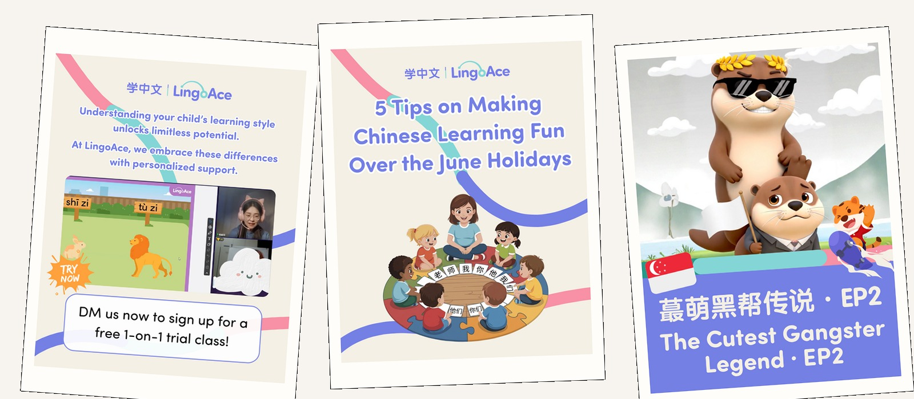
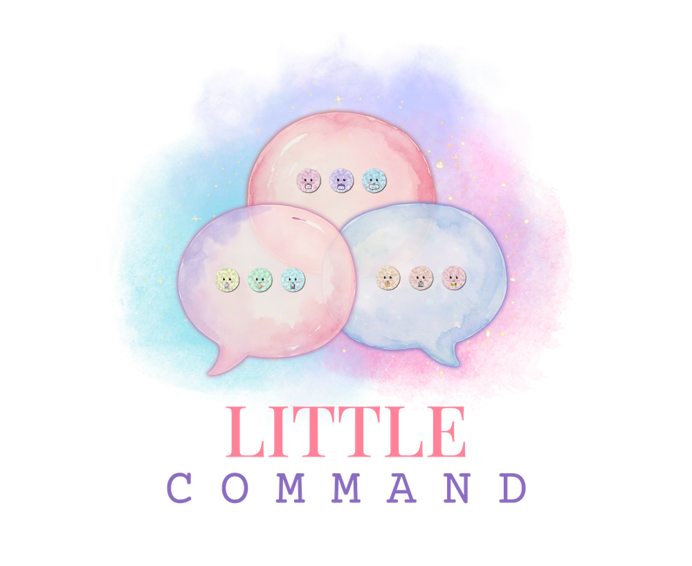
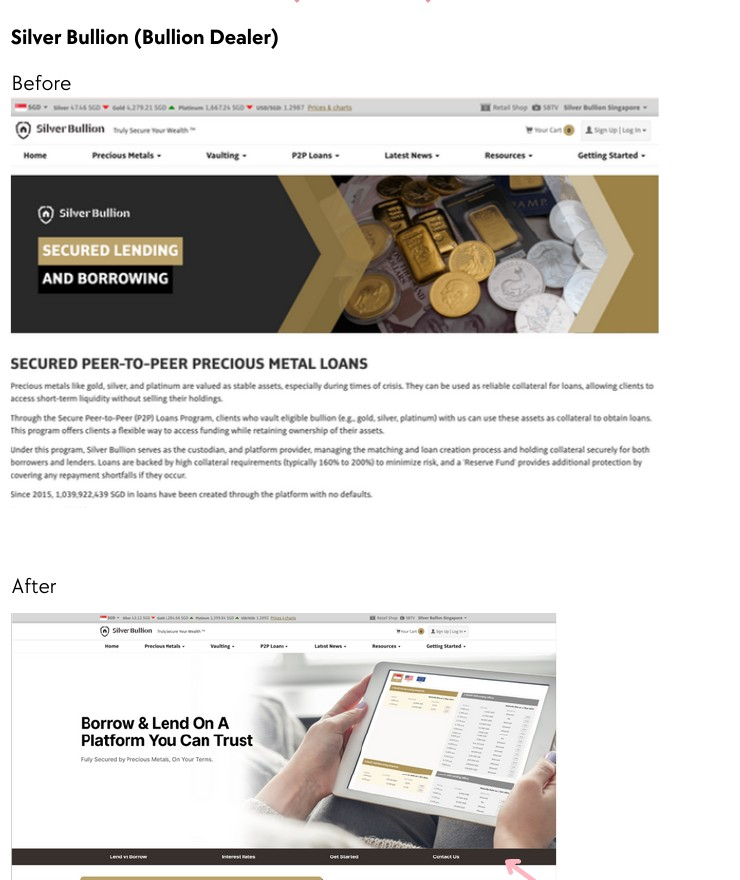
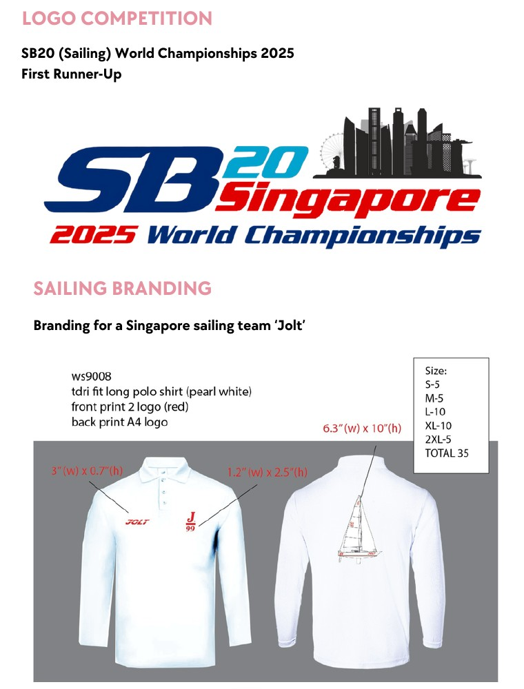
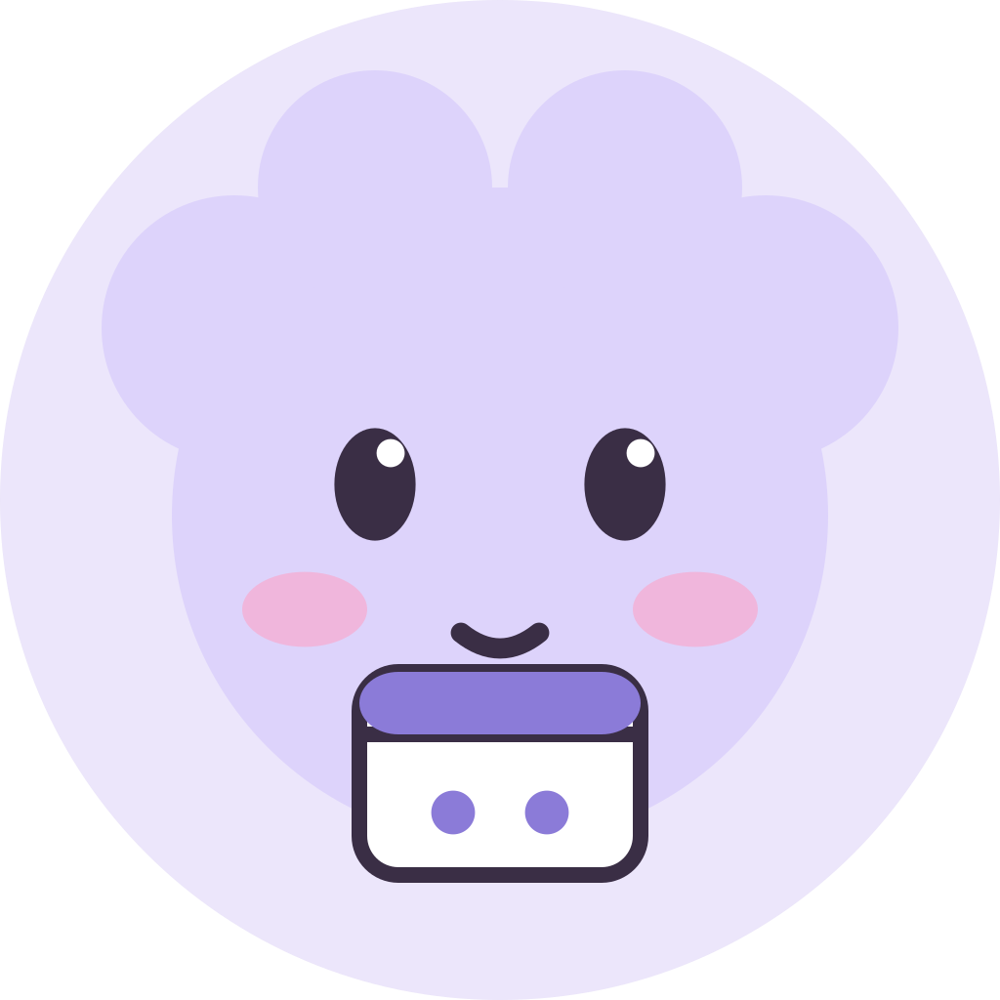

Paid mediathe ajenda · singapore · available for good work
I turn attention
into action.
I’m Alex Jane Tan — a marketing executive working across paid media, content, growth and the digital details that move people from “interesting” to “let’s go”.
signal
+ story
+ momentum
+ story
+ momentum
current focus
Good creative
with a job to do. 01 / 04
with a job to do. 01 / 04
ROAS7.05×tracked result
QR scans191retail campaign
A few things I bring to the table
Paid mediaMeta · Google · YouTube
GrowthFunnels · CRO · SEO
CreativeContent · video · web
SystemsCRM · analytics · AI
01 / selected work
Work that earns
its place.
A mix of campaigns, content, landing pages and brand work — always with a clear objective and something measurable on the other side.
hover for the short version · click for the full write-up

Paid media
Content
Content
Personal build
Web / UX
Brand02 / code lab
I make the
moving parts.
A small look at the HTML, CSS and JavaScript work behind the pages, tools and playful interfaces I build when the brief needs more than a static screen.
01
Orbiting UI
↗Radial positioning, timed rotation and responsive resizing from an OMH circular-slider experiment.
OMH · circular slider02
Search to insight
↗A property evaluator that turns a search into transaction history, price trends and a unit estimate.
Crestbrick · property evaluator03
Scroll as a story
↗GSAP and ScrollTrigger work that turns vertical scrolling into a pinned horizontal activity journey.
A2A · horizontal scroll04
Keep the proof moving
↗A continuous logo slider with hover pause logic for a birthday campaign showcase.
CRU · continuous slider05
Useful little systems
↗An editable checklist that adds, removes and remembers items with lightweight browser storage.
OMH · interactive checklist06
Make the value scannable
↗A product-feature component that turns a dense benefits list into clear, responsive content blocks.
CW · product featuresCode / OMH / OMH Circular Slider⌘ 01
// OMH / circular slider
const orbit = (items, radius) => {
return items.map((item, index) => {
const angle = index * (Math.PI * 2 / items.length);
return {
...item,
x: Math.cos(angle) * radius,
y: Math.sin(angle) * radius
};
});
};live previeworbit / active
01
02
AJ
search a property⌕
4-room · Toa Payoh$1.24M+8.4% / 12 months
estimate ready ↗
01
brief02
build03
launch
brief02
build03
launch
→
✓set campaign direction
✓write the first draft
ship the next version
save to local storage
01protectdaily defence
02brightenvisible glow
03restorelong-term care
A product I built
Little Command
A friendly command centre for turning scattered work into clearer next steps.
See the case study ↗

say something...↗
03 / experience
A little
context.
From property and education to B2B tech and retail, I’ve learned how to find the signal in very different categories — and make it useful.
Jun 2026 — now
Marketing Executive
Crestbrick · Singapore
Planning Meta and YouTube campaigns, social and video strategy, research-led content, performance reporting and conversion-focused web improvements across property projects.
Oct 2025 — May 2026
Growth Marketing Executive
LingoAce · Singapore
Planned digital campaigns for centre launches, holiday programmes and education events, coordinating partners, KOL outreach and event promotion.
Dec 2024 — Jul 2025
Digital Marketing Executive
The Reserve · Singapore
Grew four social platforms by 639+ followers; built MRT and Google Ads campaigns that delivered 28,065 clicks and supported UX recommendations with Mixpanel insights.
May 2023 — Dec 2024
WW Digital Marketing Specialist
Gigamon · Singapore
Led global digital marketing initiatives for APAC, EMEA and North America, including demand-generation campaigns, landing pages and event registrations.
Mar 2022 — May 2023
Growth Marketing Specialist
Mstige Group · Singapore
Managed Google and Facebook Ads, SEO and performance reporting while building interactive landing pages in HTML, CSS and JavaScript.
04 / how I work
Curious by default.
Useful on purpose.
I like the space where strategy meets making: the brief gets sharper, the idea gets clearer, the page gets easier to use and the numbers tell us what to do next.
My toolkit spans paid media, content, CRM and analytics, plus enough Figma, HTML, CSS, JavaScript and AI-assisted workflow to turn a good thought into something people can actually experience.
I also created Little Command — a personal AI-assisted workflow tool designed to make everyday work feel more organised, more searchable and more useful.
toolkit
Meta AdsGoogle AdsSEOFigmaHTML / CSSJavaScriptSalesforceMarketoGAMixpanelCanvaPremiere ProChatGPTClaude
05 / the long game
A few things
I’m chasing.
The ambitions that keep me curious, competitive and moving — professionally, personally and at full throttle.
Marketing director
for a brand people know.
Leading a sharp team, shaping a global point of view and making work that earns attention for the right reasons.
Compete globally
in Mobile Legends.
Strategy, mechanics, teamwork and composure — I want to test all four on the biggest stage.
Get the pink
S1000RR.
A little ridiculous, very fast and completely worth working toward.